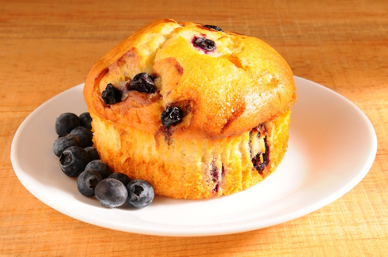

BÄRMUFFINS 12 st stora
Ingredienser: 125 g smör 2 dl strösocker 3 st ägg 2 tsk vaniljsocker 1.5 tsk bakpulver 1 krm salt 5 dl vetemjöl 1 dl mjölk 3 dl färska eller frysta bär
Gör så här:
Smörj en muffinsplåt eller ställ upp 12 st stora pappersformar för muffins på en plåt. Rör smör och socker till en jämn smet. Använd gärna elvisp. Rör i äggen, ett i taget, till en jämn smet. Använd gärna elvisp. Tillsätt vaniljsocker, bakpulver och salt och rör ihop. Använd gärna elvisp. Tillsätt vetemjölet och mjölken. Kör försiktigt med elvispen till en jämn smet. Det är viktigt att sluta vispa med elvisp så fort smeten är jämn så att man inte vispar för länge. Sluta använda elvisp och vänd försiktigt ner bären med en sked utan att mosa blåbären för mycket för då blir muffinsarna gråaktiga i färgen. (Om du använder frysta blåbär så behöver du inte vara lika försiktig.) Klicka ut smeten i muffinsformarna så att de blir fyllda till ca tre fjärdedelar. Grädda i mitten av ugnen i 18-20 minuter i 200°C. Om du använder muffinsplåt. Lossa efter några minuter muffinsen från formen. Ett tips är att använda skaftet på en tesked. Låt svalna på galler. Ät och njut!
